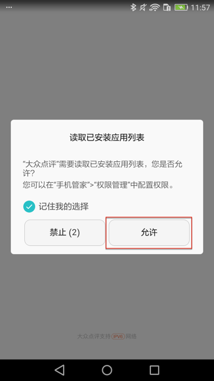
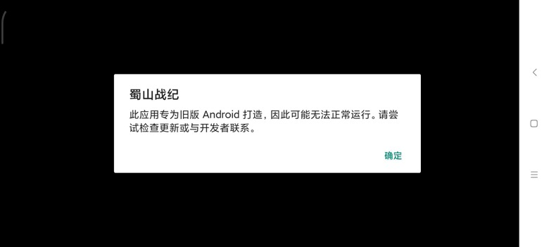

监听
其中一个很常用的，很好用的功能就是：监听
即，注册了要监听的条件，满足后，就会自动触发。
典型应用比如，希望界面中出现好的、确定等按钮，就自动点击。
比如：
- 大众点评安装期间的
安装 - 弹框中的
允许- 
- 普通安卓原生的按钮：
确定- 

则需要去注册监听器，其核心逻辑是：
- 之前用：
watcher - 后改用：
xpath - 20210239 作者后来又改回：
watcher
详细解释：
用watcher实现监听
# 注册单个监听器
d.watcher("安装").when(text="安装").click()
# 等价于
d.watcher("安装").when(text="安装").click(text="安装")
# （此刻）单次运行（一次）
d.watchers.run()
# 后台长期的运行
# d.watchers.watched = True # 旧
d.driver.watcher.start() # 新
其中的：
- 20210329更新：版本
v2.5.3之后，又从xpath换回watcher- 之前：
d.watchers.watched在uiautomator2>=1.0.0版本后已废弃。- 当时：推荐换用下面的
xpath的写法：xpath.watch_background
- 当时：推荐换用下面的
- 之前：
实际调用举例：
def register_watcher(self):
# Note: since uiautomator2 v2.5.3, change xpath back to wather, so use watcher now
for key in self.config["install"]:
logging.debug("register {}".format(key))
# self.driver.watcher(key).when(text=key).click()
# self.driver.watcher(key).when(text=key).click(text=key)
# self.driver.watcher.when(key).click()
self.driver.watcher(key).when(key).click()
XpathConfigKeyList = [
"Confirm_Button_Xpath_List",
"NextStep_Button_Xpath_List",
"PopupWindow_CloseButton_Xpath_List",
]
for eachXpathConfigKey in XpathConfigKeyList:
curXpathList = self.config[eachXpathConfigKey]
for eachXpath in curXpathList:
self.driver.watcher.when(eachXpath).click()
logging.debug("Registered xpath wathcher: %s", eachXpath)
self.driver.watcher.when(self.config["Vivo_Password_Input_Xpath"]).call(self.autoInputVivoPassword)
self.driver.watcher.when(self.config["Vivo_Register_Vivo_Account_Xpath"]).call(self.autoDoVivoAccountLogin)
self.driver.watcher.when(self.config["Permission_Settings_GoTo_App_Config_Xpath"]).call(self.autoGrantPermission)
# self.driver.watcher.when(self.config["Qihoo360_Login_ReadAndAgree_Xpath"]).call(self.autoDo360AccountLogin)
self.driver.watcher.when(self.config["Qihoo360_PasswordLogin_Xpath"]).call(self.autoDo360AccountLogin)
self.driver.watcher.start()
用xpath实现监听
# 注册单个监听器
d.xpath.when(text="安装").click()
# 单次运行一次
d.xpath.run_watchers()
# 后台长期的运行=开启后台监控模式
d.xpath.watch_background() # 默认每4s检查一次
# 或手动设置间隔时间
d.xpath.watch_background(2.0) # 2.0表示每2秒检查一次
# 如果需要，再去停止后台监听
d.xpath.watch_stop()
更多关于xpath的细节和用法，详见：
uiautomator2/uiautomator2/ext/xpath at master · openatx/uiautomator2
（注：不在主页的readme中，所以一般很少人能找到。我是从raw的readme.md中反推才找到的）